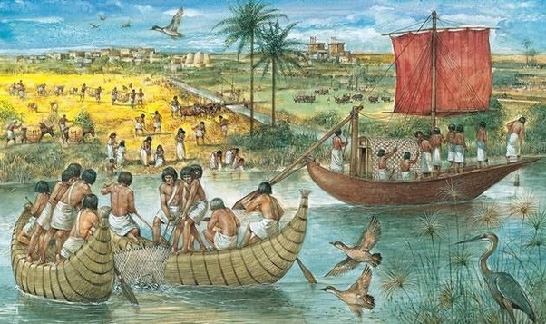

Transportul In Antichitate si Evul Mediu
În Antichitate și Evul Mediu, transportul a jucat un rol crucial în dezvoltarea civilizațiilor umane, facilitând comerțul, schimburile culturale și expansiunea imperiilor. De-a lungul acestor perioade istorice, oamenii au dezvoltat și rafinat diverse metode de transport pentru a răspunde nevoilor lor în schimbare. Iată câteva aspecte cheie ale transportului în Antichitate și Evul Mediu:
Transportul pe uscat: În Antichitate și Evul Mediu, transportul pe uscat a fost realizat în principal pe jos, călare pe animale sau cu tracțiune animală. Cărăușii și negustorii călătoreau pe drumurile și cărările vechi, care s-au dezvoltat în importante rețele de transport, cum ar fi Drumul Mătăsii în Asia sau Drumul Roman în Europa.
Transportul maritim: În regiunile cu acces la mări și oceane, transportul maritim a fost esențial pentru comerțul internațional și pentru expansiunea imperiilor. Ambarcațiunile maritime, cum ar fi galerele și corăbiile, au fost folosite pentru a transporta mărfuri, oameni și armate între porturi și teritorii îndepărtate.
Transportul fluvial: Râurile mari și fluviile au servit ca importante căi navigabile pentru transportul de mărfuri și persoane. În Egiptul Antic, de exemplu, Nilul a fost principalul mijloc de transport, permitând oamenilor să se deplaseze și să-și transporte bunurile pe distanțe mari în interiorul țării.

Dezvoltarea infrastructurii: În Antichitate și Evul Mediu, au fost construite și întreținute drumuri, poduri și canale pentru a facilita transportul și pentru a sprijini expansiunea imperiilor. Construcția de drumuri romane și canale, precum Canalul Suez în Egiptul Antic, a contribuit la creșterea comerțului și a conectivității regionale și internaționale.
Inovații tehnologice: În aceste perioade istorice, au fost făcute și inovații semnificative în tehnologia transportului. De exemplu, în Evul Mediu timpuriu, s-a dezvoltat carul cu roți trase de cai, îmbunătățind eficiența și viteza transportului pe uscat.
Securitatea transportului: Pe măsură ce comerțul și transportul au devenit mai întinse și mai frecvente, au fost dezvoltate și măsuri pentru a asigura securitatea rutelor de transport. De exemplu, au fost stabilite escorte pentru a proteja convoaiele de călători și mărfuri împotriva hoților și a altor amenințări.